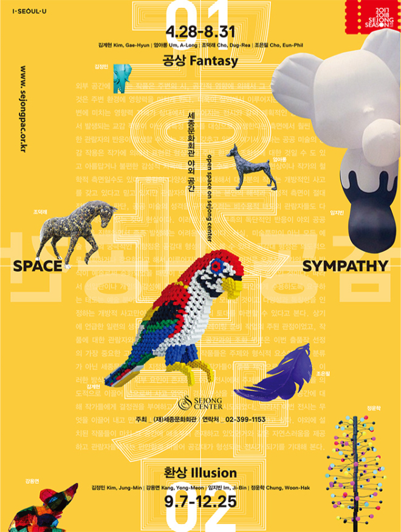
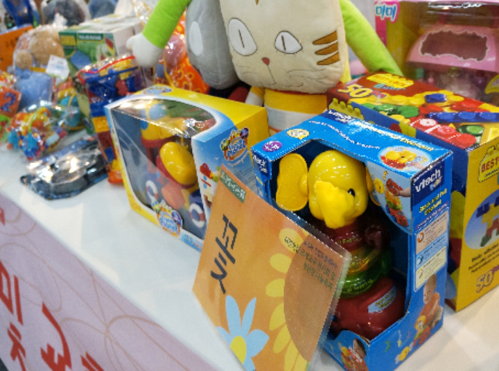

- 기간
- 2017.04.28 ~ 2017.08.31
- 장소
- 회관앞 야외공간
- 시간
- 화/목/금 : 오후8시 수 : 오후3시, 오후8시 토/일 : 오후3시, 오후7시30분
- 대상
- 모든 연령
- 작가
- 홍길동
- 도슨트 시간
- 어린이 도슨트, 워크숍, 연계프로그램 등 전 시 운영과 관련한 부분은 경주예술의전당으 로 문의해주십시오.
- 금액
- 임시개방기간(2017.11.23~12.31)을 제외 한전시기간은 유료 입장입니다. 전시 운영 관련자세한 사항은 경주문화재단으로 문의 해주세요.
- 할인
-
장애인(본인 외 동반 1인까지)
경로우대(만 65세 이상 본인)
- 유료할인율
- 세종유료회원 10%할인
- 문의
- 경주예술의전당 (☎ 054-748-7726)
- 주최 및 후원
- 전시주최 : 경주시 / 전시주관 : 경주문화 재단, 서울시립미술관
- 첨부파일
- 포스터_597x896.jpg (263 KB, image/ jpeg, 다운 171 회)
- 진행여부
- 진행중
- 장르
- 전시

2017 세종문화회관 야외 공간 큐레이팅 공간감展 - 공간(space)+공감(sympathy) - 1부:공상(Fantasy) / 2부:환상(Illusion) -
외부 공간에 놓이는 작품은 시, 공간적 영향에 의해서 그 성 격이 형성되고 이것은 주변 환경에도 영향을 미치게 된다. 욱이 실외에서 이루어지는 공공 미술의 영향력은 관람자의 계획적인 방문에 의해서 발생되는 교감이 아닌 불특정 다수 를 대상으로 야기된다는 측면에서 훨씬 다양한 반응을 초래 할 수 있는 조건을 갖추고 있다. 따라서 조형 작업과 전시 환 경 영역에 해당되는 공간(space)과 공감(sympathy) 측면을 야외 공간 큐레이팅에서 다루어보는 일은 공공 미술 프로젝 트를 준비하고 이해하는 데 있어서 매우 중요한 부분이라고 할 수 있다.
스틸컷

/ 10